A quick walk around the game — from the opening screens where the CIO arrives at Vélox, through the Message Cockpit where most decisions are made, out to the managerial practices and systems that fill the rest of the interface.
The first few screens the player sees on day one.
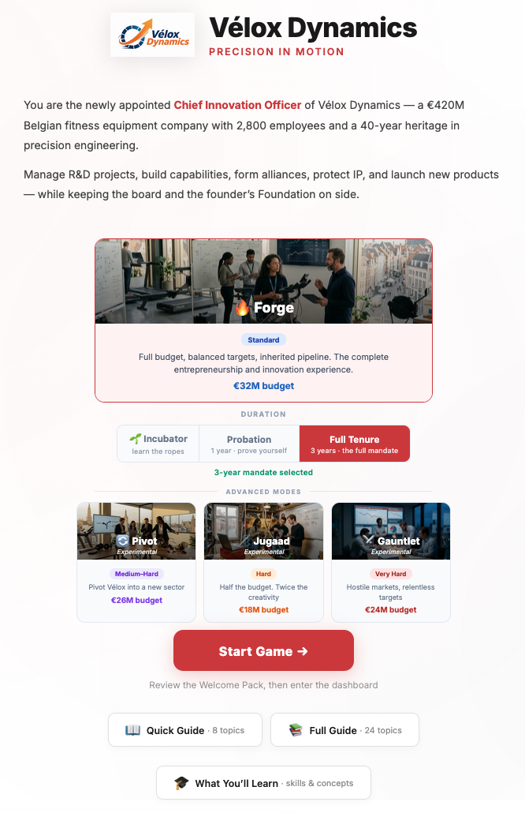
Forge, Pivot, Jugaad or Gauntlet — plus Incubator for teaching.
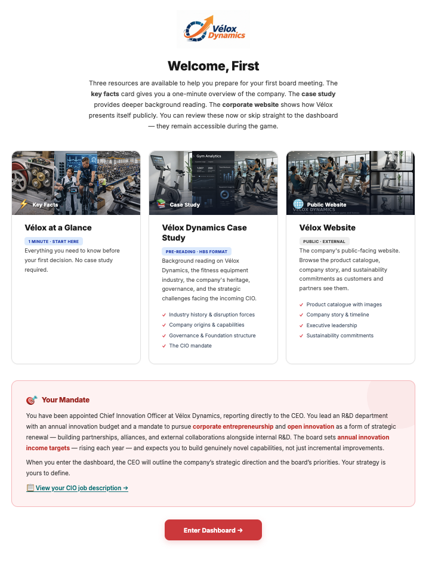
The CIO's first briefing — tone, remit and what matters most.
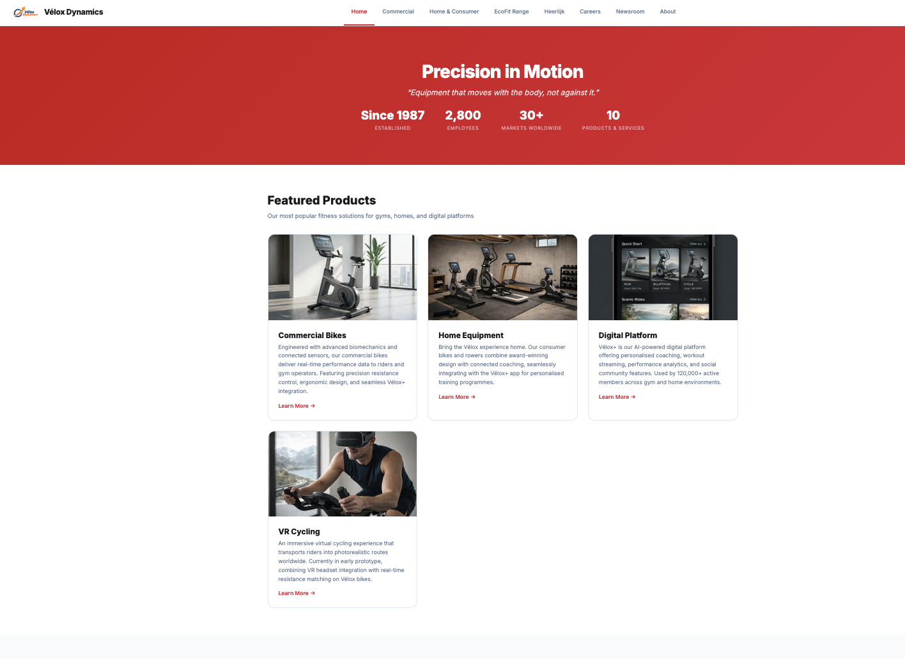
A short tour of the fictional firm you've just joined.
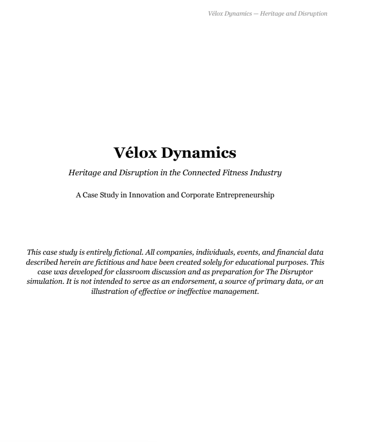
Governance, the Foundation, products and the strategic context — as an in-game PDF.
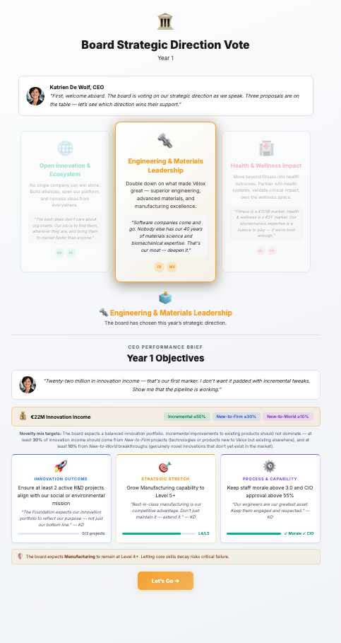
The targets the board expects you to deliver this year.
The centre of the game — where the CIO reads, decides and acts.
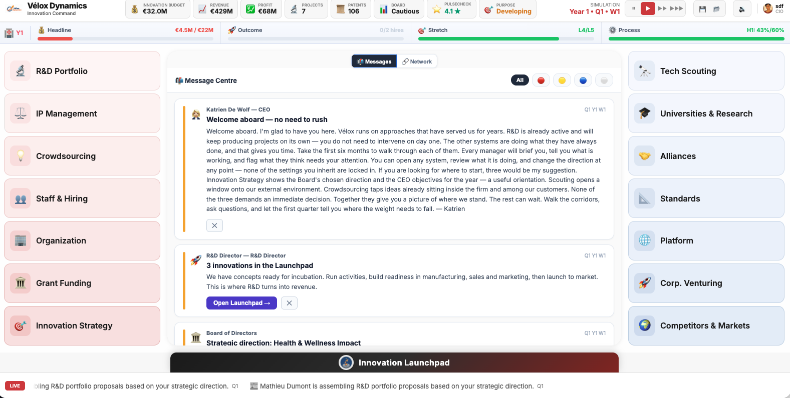
A live feed of proposals, events, warnings and decisions — the primary working surface.
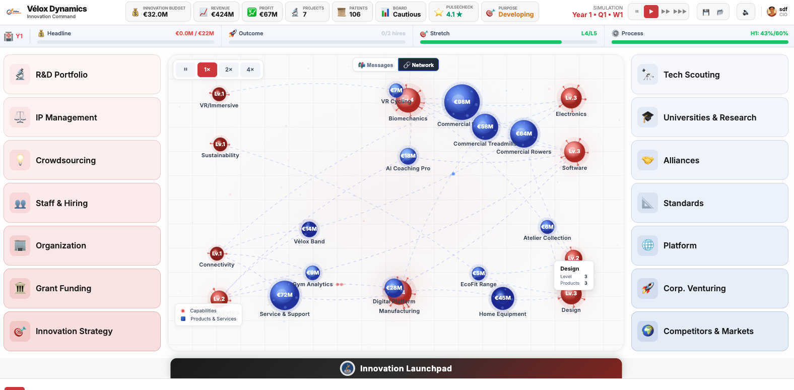
A living map of what Vélox knows and what it sells, rebuilding as the firm evolves.
Each screen below is a lever the CIO pulls — strategy, launch, people, IP, platform, investing, culture and competition.
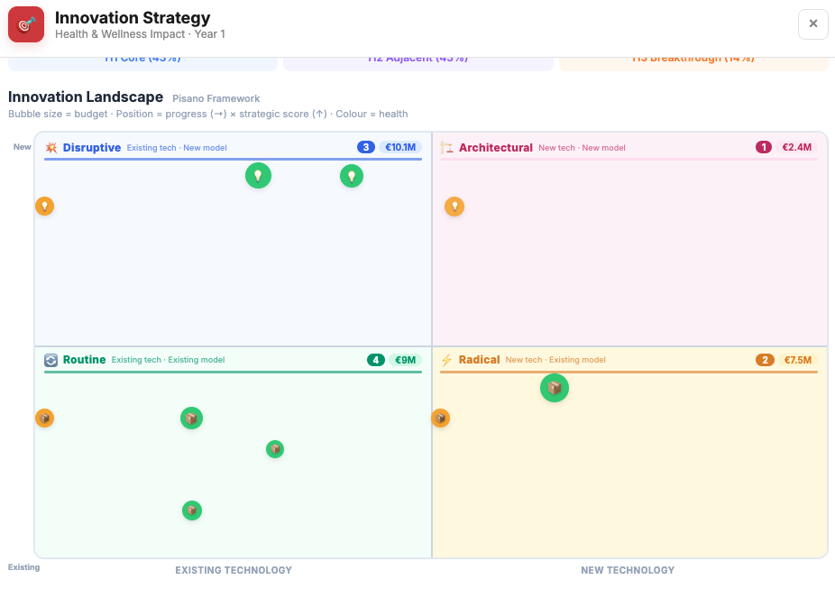
Set horizon ambition, risk appetite and the bets the board will hold you to.
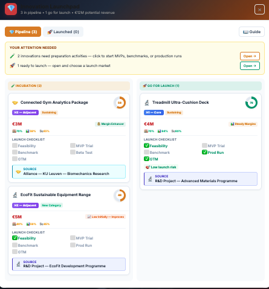
Ready projects for market, pick the launch window and watch for overload.
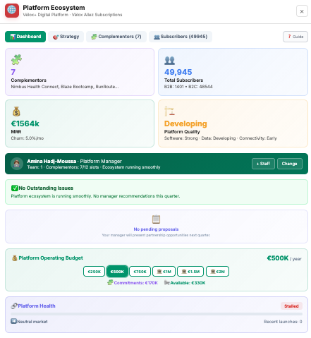
Tune openness, pricing and data sharing with complementors.
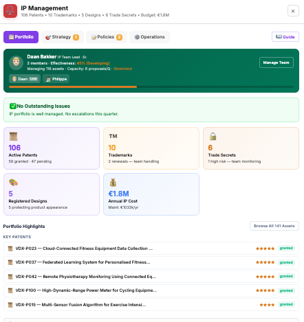
Patent, keep as trade secret, or publish — and pick your enforcement stance.
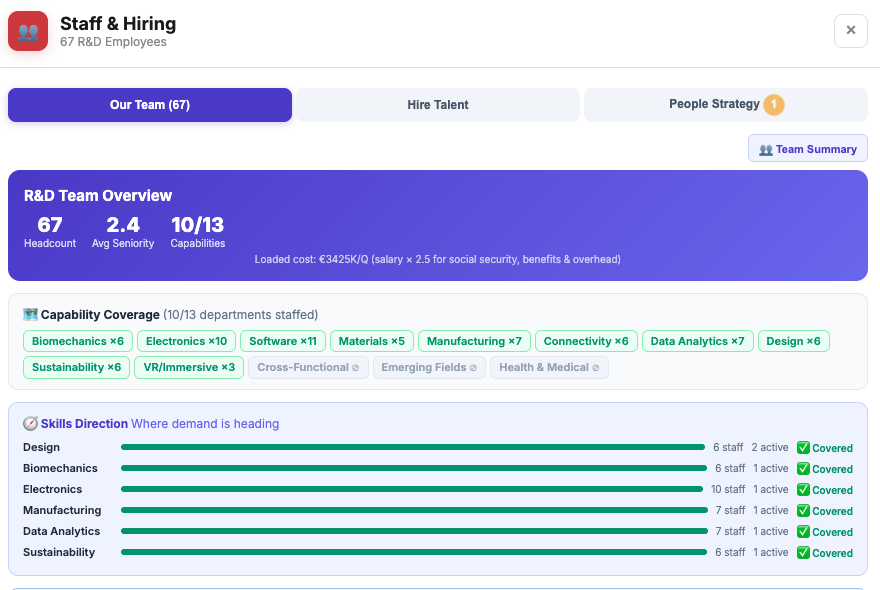
Hire across disciplines and seniorities; decide who you cannot afford to lose.
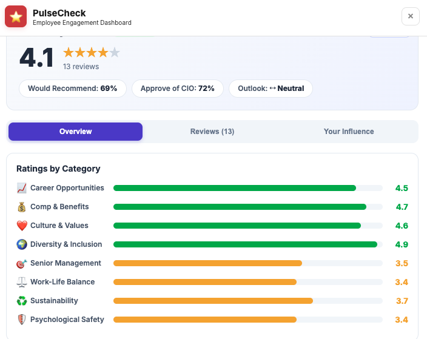
Team engagement, workload and morale — the early warning on people.
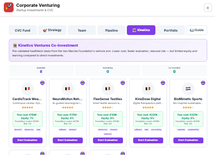
Scan start-ups, make minority investments, co-invest or go alone.
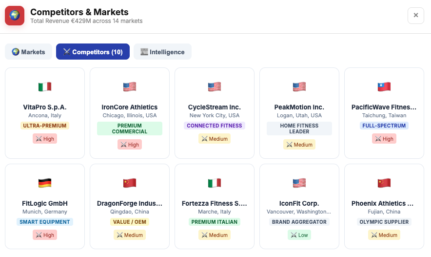
Track rival moves, pick fights, and decide when to match or leapfrog.
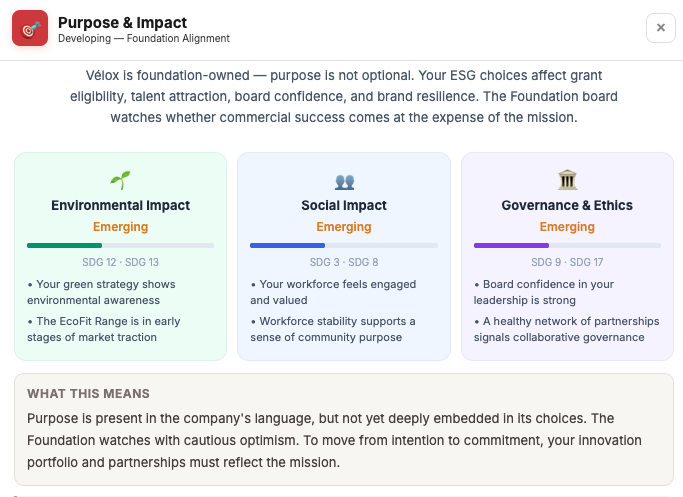
The Foundation's mission on one screen — the north star the board measures you against.